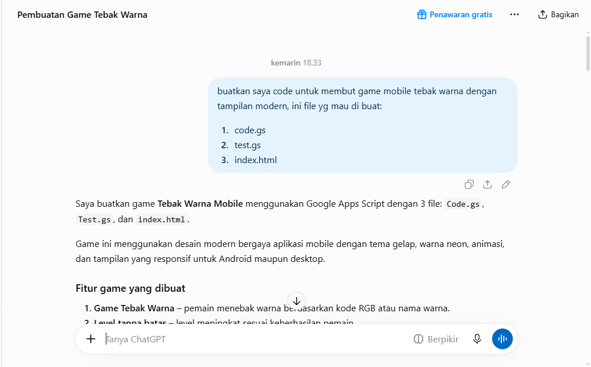
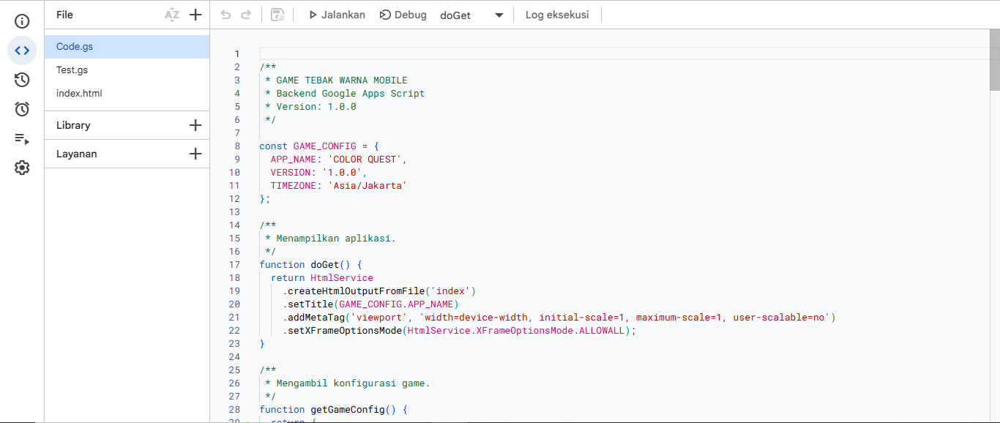
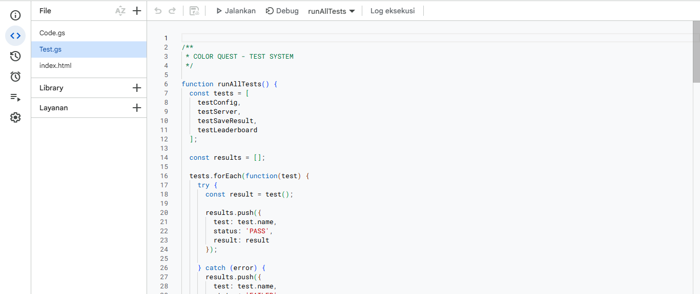
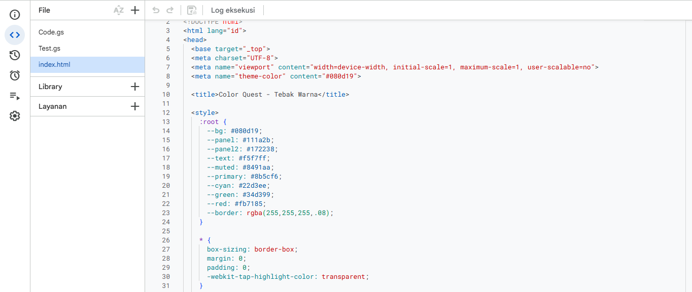
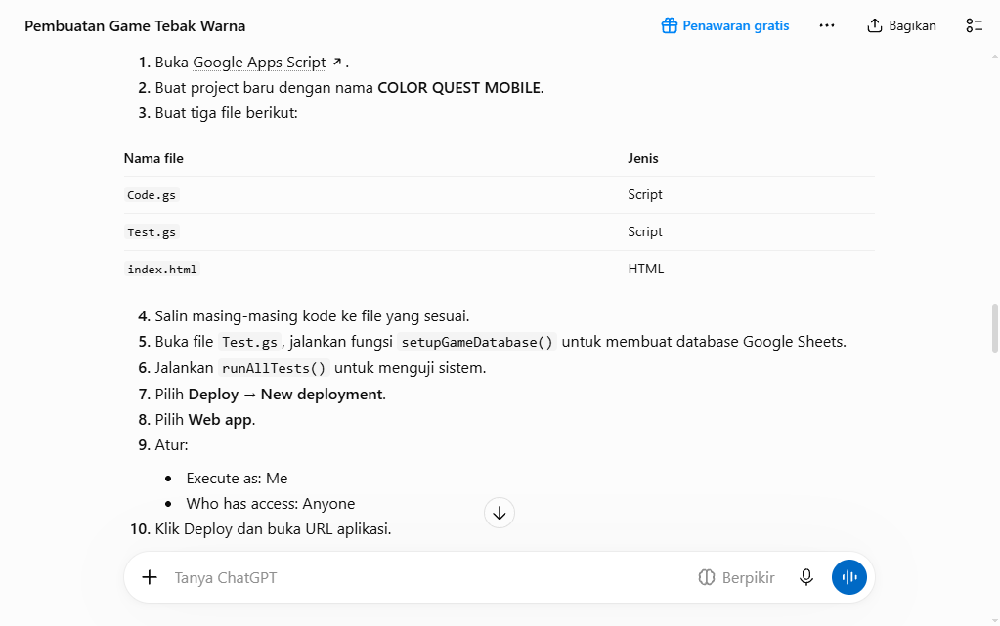
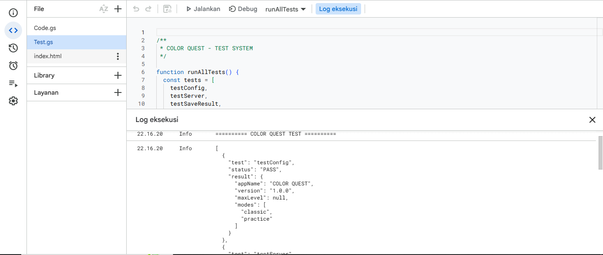

01
Menyusun prompt
Menjelaskan kebutuhan game kepada AI dengan instruksi yang terperinci.
Berikut dokumentasi dan ringkasan langkah-langkah membuat game tebak warna dengan bantuan AI, mulai dari menyusun prompt hingga men-deploy aplikasi.
Kembali ke beranda
Menjelaskan kebutuhan game kepada AI dengan instruksi yang terperinci.

Menyalin kode aplikasi yang dihasilkan AI ke dalam proyek.

Memasukkan kode pengujian untuk memeriksa fungsi program.

Menambahkan kode HTML sebagai tampilan aplikasi.

Meninjau implementasi aplikasi pada editor proyek.

Memeriksa hasil eksekusi pengujian dan memperbaiki masalah bila ada.

Meninjau kode halaman agar game dapat ditampilkan dengan baik.

Memastikan semua bagian proyek siap sebelum dipublikasikan.

Menjalankan seluruh pengujian dan memastikan hasilnya sesuai.
Prompt yang terperinci membantu AI memahami hasil yang diinginkan. Namun, jawaban AI tetap perlu ditinjau karena bisa saja keliru. Kode yang dihasilkan kemudian disalin ke proyek dan diperiksa sebelum digunakan.
Semoga presentasi tugas individu ini dapat menjelaskan proses pembuatan proyek dengan baik.